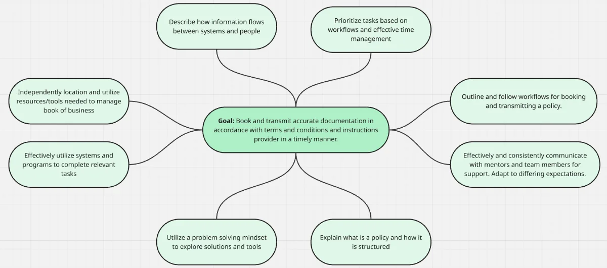
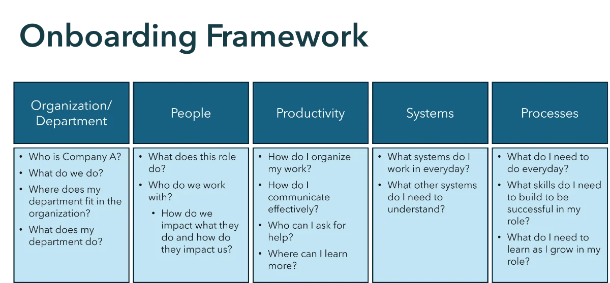

A global insurance firm reorganized into a shared services model. Each new role needed a clear onboarding path. The organization also faced ongoing challenges with change management, communication, process standardization, and consistent system use.
Partnered with client leadership and staff over two years to build onboarding and refresher training for the new shared services organization. Each project began with a needs analysis and ended with a tailored curriculum.
Created onboarding plans for three new roles, with teams of 15 to 50 people.
Expanded the work to include refresher training for two shared services departments.
Interviewed leaders and staff to assess each role’s and department’s needs.
Facilitated working sessions using action mapping to connect business goals to performance gaps.
Presented findings and a recommended approach to leadership. Flagged non-training needs, such as change management and communication.
Designed curricula of 10 to 20 modules each, built around four learner questions: Who do I work with? What do I do? Why does it matter? How do I do it?
Built scenario-based interactions, animated scenarios, and interactive decision trees.
Built with Articulate Rise and Storyline, Vyond, Camtasia, and Adobe Creative Cloud.
Currently designing a live workshop for 2027.
Inside the program
Action mapping outcomes

Curriculum framework
